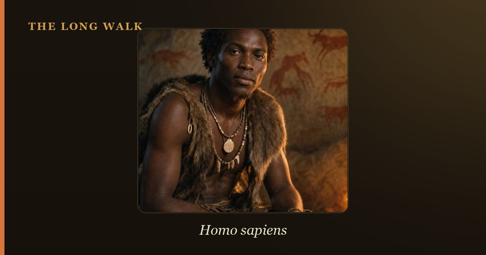

The Chatelperronian (~45,000–40,000 years ago) is a toolkit of curved-backed knives and bone tools, probably made by the last Neanderthals; it includes rare personal ornaments. The Aurignacian (~43,000–28,000 years ago) represents the first modern humans in Europe, with fine blades, carinated scrapers, art, and musical instruments. Whether Neanderthals invented the Chatelperronian independently or copied arriving moderns remains contested.

Between 45,000 and 40,000 years ago, Europe underwent one of prehistory's most profound transitions. Neanderthals, who had dominated the continent for over 200,000 years, were disappearing. Modern humans were arriving from Africa and the Levant. In the archaeological record, this moment is captured by two distinct stone-tool industries: the Chatelperronian and the Aurignacian. Each tells a different story about cognition, behavior, and cultural change.
The contrast between these two industries is more than a matter of technique. It raises urgent questions about Neanderthal intelligence, their capacity for symbolic behavior, and whether they could innovate or only imitate. Did Neanderthals develop the Chatelperronian on their own, showing cognitive sophistication equal to modern humans? Or did they borrow ideas from the newcomers, marking them as cognitively inferior? Was the association between Neanderthals and Chatelperronian ornaments real, or a trick of cave stratigraphy? The answer shapes how we understand our extinct cousins.
| At a glance | Chatelperronian | Aurignacian |
|---|---|---|
| Age | ~45,000–40,000 years ago | ~43,000–28,000 years ago |
| Likely makers | Late Neanderthals | Early modern humans (Cro-Magnons) |
| Geography | France and northern Spain | Across Europe |
| Signature tools | Curved-backed knives (Châtelperron points), blades, bone points | Fine blades, carinated scrapers, split-based bone/antler points |
| Personal ornaments | Pierced animal teeth and shells (debated) | Widespread pendants, ivory figurines, perforated animal teeth |
| Art and symbolism | Rare or absent (or Neanderthal-made) | Early figurative art, bone flutes, engraved objects |
| Significance | Window into late Neanderthal cognition | Marker of modern human arrival and symbolic culture |
Two toolkits at the crossroads
The Chatelperronian and Aurignacian appear at a moment when Neanderthals and modern humans shared the same continent, probably for a few centuries. Neither industry appeared suddenly. The Chatelperronian emerged from earlier Middle Paleolithic traditions, incorporating some blade technology alongside its signature curved-backed knives. The Aurignacian, by contrast, represents a sharper break from what came before—a suite of techniques and behaviors that scholars associate unmistakably with the first modern humans in Europe.
Radiocarbon dating places the Aurignacian slightly later than the earliest Chatelperronian, but chronologies overlap. This overlap is crucial: it means the two industries may have existed at the same time, in the same regions, as Neanderthals and moderns coexisted. The archaeological challenge is disentangling what each group made, and whether one group learned from the other.
The Chatelperronian and its makers
The Chatelperronian takes its name from the rock shelter of Châtelperron in central France. Its hallmark is a distinctive curved, sharp-edged blade with a blunt back—the Châtelperron point. These tools appear to have served as knives, probably hafted with bone or wood. Alongside them, Chatelperronian deposits contain a variety of blades, scrapers, and, importantly, carefully worked bone and antler tools, including split-based points and needles.
The evidence linking the Chatelperronian to Neanderthals comes from skeletal remains found at a few key sites. At the Grotte du Renne in Arcy-sur-Cure (France), researchers excavated Neanderthal teeth and bones in layers that also contained Chatelperronian tools. The same site also yielded a remarkable find: personal ornaments, including pierced animal teeth and shells. If Neanderthals made these ornaments, it suggests they engaged in symbolic behavior—a hallmark of modern human cognition.
But here lies the great debate. Were these ornaments really made by Neanderthals, or do they belong to a later modern human occupation that mixed with the earlier Neanderthal layers? Radiocarbon dating by Hublin, d'Errico, and colleagues (2012) supported a Neanderthal age for the ornaments. Critics, including Higham and others, argued that stratigraphic mixing and the limitations of radiocarbon dating on bone had led to misinterpretation. The controversy remains unresolved, and it hinges on one of archaeology's most vexing problems: distinguishing primary deposits from mixed, disturbed sediments.
The Aurignacian and modern humans
The Aurignacian is unmistakably the toolkit of Cro-Magnons, the first anatomically modern humans in Europe. It appears across the continent from Spain to Russia, and it is marked by a far greater diversity of specialized tools than the Chatelperronian. Aurignacian toolkits include fine, sharp blades produced from carefully prepared stone cores; carinated (keeled) scrapers, which are thought to have been used to work bone and antler; and an array of sophisticated bone and antler implements, including harpoon-like points with a split base for hafting.
What truly sets the Aurignacian apart is its association with art and symbolism. At sites across Europe—especially in the Swabian Jura region of Germany—archaeologists have found ivory figurines, including the famous Lion-Man of Hohlenstein-Stadel (~40,000 years old), along with decorated objects and bone flutes. These discoveries are not incidental finds; they are hallmarks of a culture that invested time and skill in creating images and music. The flutes, some carved from mammoth ivory, show a sophisticated understanding of acoustics. The figurines, carved with evident care, depict animals and, possibly, human or hybrid forms.
This body of art and symbolic material is taken as evidence that Aurignacian peoples engaged in the kind of abstract thought and cultural transmission that modern humans practice today. They appear to have organized their societies around shared symbols, ritual, and aesthetic values—markers of complex cognition and language.
Key differences: tools, ornaments, and art
At the level of stone-tool technique, the differences between the two industries are substantial. Chatelperronian points are thick, blunt-backed blades with a distinctive curved profile. Aurignacian blades are thinner, sharper, and more uniform. The Aurignacian carinated scraper has no clear precedent in earlier industries; it appears to be a novel invention. These technical differences suggest different problem-solving approaches, possibly reflecting different toolmaking traditions or even cultural preferences.
The ornament inventory also diverges sharply. The Chatelperronian ornaments, where they exist, are rare and simple—a few pierced teeth. Aurignacian ornaments are abundant, diverse, and beautifully made. Pendants carved from mammoth ivory, carefully perforated shells, carved animal teeth, and bone tubes appear in Aurignacian contexts across Europe. This profusion suggests a culture for which personal adornment and status display held considerable importance.
Art, in the sense of figurative, representational imagery, appears almost exclusively in Aurignacian deposits. The Chatelperronian includes bone and antler work, but no figurines or engraved images that can be confidently attributed to Neanderthals. This absence is significant: if Neanderthals did not create representational art, even in the Chatelperronian, it may indicate a cognitive boundary between them and modern humans.
The Neanderthal jewelry debate: independent invention or imitation?
The ornaments found at Grotte du Renne sit at the center of a storm. If Neanderthals made them, it challenges the traditional view that symbolic behavior is uniquely modern human. It suggests Neanderthals could innovate, could recognize aesthetic value, and could engage in ritual display. Such behavior would imply a level of abstract thought and social sophistication that brings them closer to cognitive parity with early moderns.
The counter-argument holds that even if Neanderthals made the Chatelperronian, they may have done so only after encountering modern humans. In other words, they may have copied or been inspired by modern human behaviors and aesthetics. This scenario, called acculturation, would position Neanderthals as creative but ultimately reactive—intelligent enough to imitate innovation, but not to originate it. Under this reading, the appearance of ornaments in the Chatelperronian is less a sign of equal cognitive capacity and more a sign of cultural borrowing.
A third possibility complicates matters further: the ornaments may belong to a later, modern human occupation of the Grotte du Renne, and stratigraphic mixing may have made them appear to be contemporary with Neanderthal layers. If so, the link between Neanderthals and symbolic behavior dissolves, and we are left with a simpler narrative: Neanderthals made the Chatelperronian, modern humans made the Aurignacian and its art, and the two traditions never truly met.
Why it matters: reading cognition from stone
The Chatelperronian versus Aurignacian question is not merely academic. How archaeologists interpret these industries shapes fundamental views about human nature and the origins of modern cognition. If Neanderthals invented ornaments independently, then symbolic thought, art, and personal adornment arose at least twice in human evolution—once in Neanderthals, once in modern humans. This would suggest such behaviors are not uniquely human but emerge under the right social and environmental conditions.
Conversely, if Neanderthals never made symbolic ornaments, or did so only in imitation of modern humans, then the Aurignacian marks a sharp cognitive divide. Modern humans brought something genuinely new to Europe: an ability to think abstractly about meaning, to represent the world in images, and to invest effort in items of no practical use. This view preserves a boundary between us and our extinct cousins.
Modern genetic and anatomical work has complicated the picture further. We now know that Neanderthals and modern humans interbred and that modern Europeans carry Neanderthal DNA. This biological admixture suggests a less absolute separation than once imagined. The Chatelperronian and Aurignacian, then, offer an archaeological window onto a moment of profound transition—when one human species was giving way to another, when traditions were being passed, modified, and abandoned. Whether that transition involved the genuine meeting of minds or the replacement of one mind by another remains, in many ways, an open question.
See how the last Neanderthals and first modern Europeans overlap on the interactive deep-time tree.
Explore the family tree →Frequently asked questions
What is the difference between Chatelperronian and Aurignacian?
The Chatelperronian (~45,000–40,000 years ago) is a toolkit of curved-backed knives and bone tools, probably made by the last Neanderthals; it includes rare personal ornaments. The Aurignacian (~43,000–28,000 years ago) represents the first modern humans in Europe, with fine blades, carinated scrapers, art, and…
The Neanderthal jewelry debate: independent invention or imitation?
The ornaments found at Grotte du Renne sit at the center of a storm. If Neanderthals made them, it challenges the traditional view that symbolic behavior is uniquely modern human. It suggests Neanderthals could innovate, could recognize aesthetic value, and could engage in ritual display.
- Hublin, J.-J. et al. (2012). 'Radiocarbon dates from the Grotte du Renne and Saint-Cesaire support a Neandertal origin for the Chatelperronian.' PNAS 109. pnas.org
- Bar-Yosef, O. & Bordes, J.-G. (2010). 'Who were the makers of the Chatelperronian culture?' Journal of Human Evolution 59. sciencedirect.com
- Britannica — Aurignacian culture. britannica.com